Installing R and RStudio
Portable environment ¶
This page will guide you on installing R and RStudio in a portable environment on a Windows 10 system. Following are the reasons why I prefer a portable installation over a regular installation:
- I am not tied up to a particular computer. Installation and files reside in a portable drive (a pen-drive or a portable hard disk drive). I can use R on any Windows system wherever I go.
- If this system crashes, I don't lose my setup or files.
- I like experimenting.
If you prefer a regular installation, visit RStudio and follow the steps.
Installing PortablaApps platform (optional): Portable Apps platforms comes with it's own start menu launcher which is handly when you install multiple portable programs in future. Download and install PortableApps Platform from https://portableapps.com/download.
1. Select "New Install" 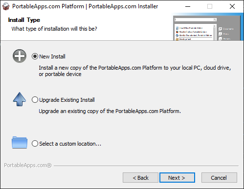
2. Select
- Portable apps if you want to install it on your pen-drive or a portable hard disk drive
- Cloud, if you want to intall it in your Dropbox, Google Drive, PCloud, One Drive, etc
- Local - It will be installed in your local drive but only you can access the programs. Other Windows users on your system will not be able to access your portable applications. This is where I am installing.
- Local All Users - It will be installed in your local drive and all users on your computer can access them.

3. Select your preferred directory and continue. 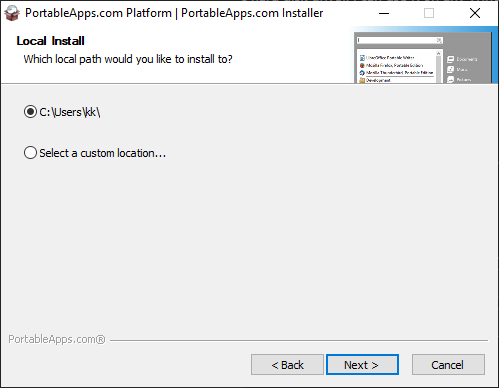
Once the installation is complete, open Portable Apps platform and if everthing went well, you'll see something like this. 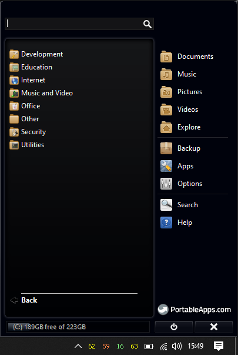
[^top]
Installing R ¶
1. Download R Portable paf.exe file from https://sourceforge.net/projects/rportable/.
2. Open PortableApps Menu and go to Apps > Install a New App 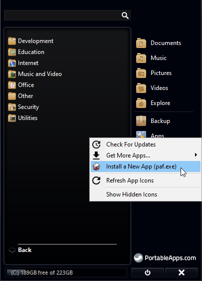
3. Select the R Portable paf.exe file you downloaded earlier and continue installation with default settings.
4. Once installation is complete, you will be able to see R in your Portable Apps menu. Click on it and open R console. 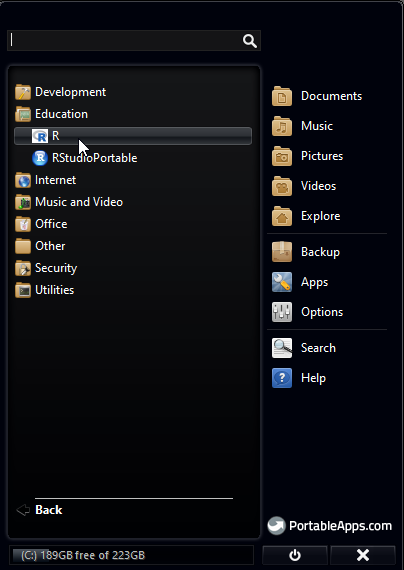
5. Updating R packages: In R Console menu, go to Packages > Update Packages 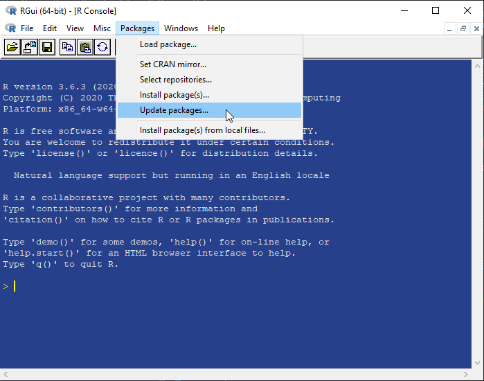
6. Select the CRAN mirror location nearest to you. 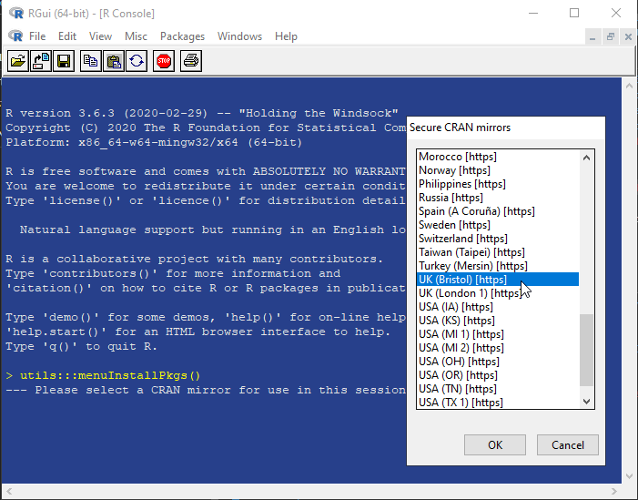
7. If there are any packages that need to be updated, you'll see a small window with a list of apps selected. Click 'OK' and update them.
8. Close R console. There is no need to save the workspace image. 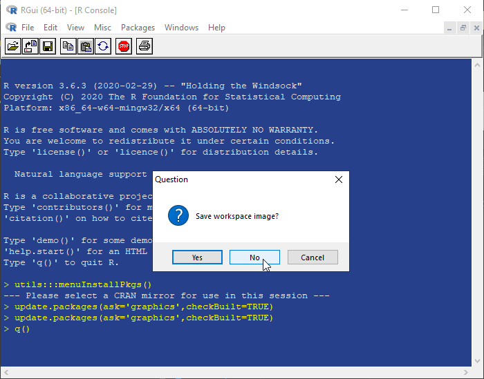
[^top]
Installing RStudio ¶
RStudio is provides the GUI(Graphics User Interface) and is also the commonly used IDE(Integrated Development Environment) for R.
1. Go to https://sourceforge.net/projects/rportable/files/R-Studio/ and select the latest version of RStudio. Download the paf.exe file from the folder.
2. Open PortableApps Menu and go to Apps > Install a New App
3. Select the RStudio Portable paf.exe file you downloaded earlier and continue installation with default settings.
4. Once installation is complete, you will be able to see RStudioPortable in your Portable Apps menu. Click on it and open R Studio.
5. The first time you open R Studio, it will ask you to chose the version of R you want to use. 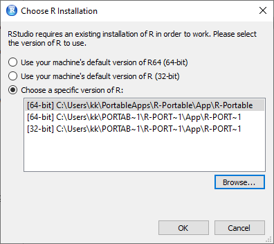
6. Click "Browse" and point to the "bin" directory of portable R you installed earlier. The path looks similar to C:\Users\YourUserName\PortableApps\R-Portable\App\R-Portable\bin.
7. Select 32-bit or 64-bit based on your Windows 10 version. If you are unsure, select 32-bit as it works on both.
You are now ready to use R Studio. 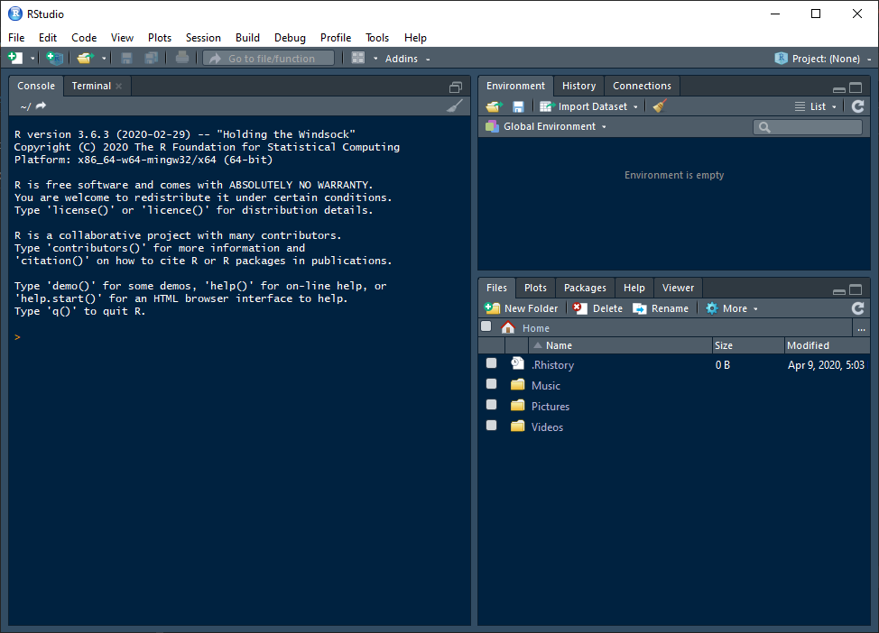
8.\ Create R Project. Select File > New Project. Select "New Directory".
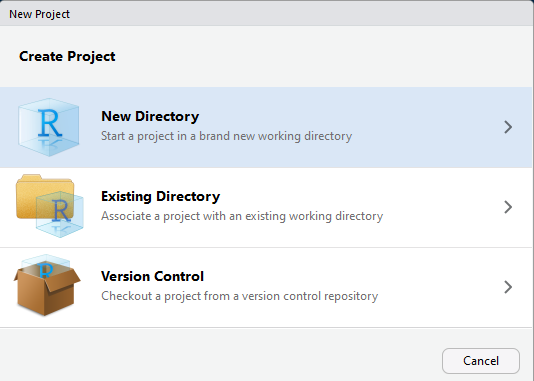
Select "New Project"
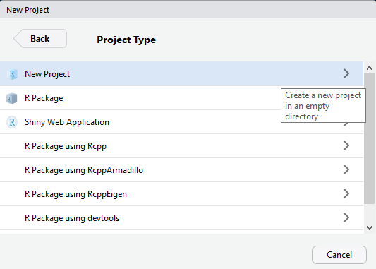
Name your project (example: DataScienceWithR). Browse and select the directory where you want the project to reside. Click "Create Project".
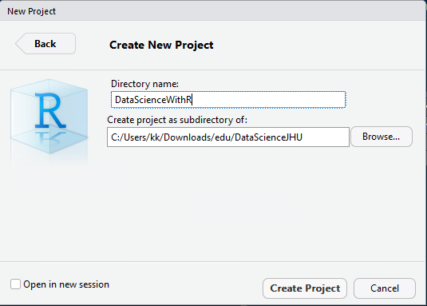
You should now see your project files including "DataScienceWithR.Rproj" file in the second quadrant of R Studio.
[^top]
Installing R Markdown ¶
As a data scientist, it's important to not only write and run code but also explain data manipulation and inferences in words. Markdown allows us to document our work. R-Markdown integrates R code with Markdown to provide an integrated solution. JupyterLab (a successor of iPython) is another such tool, which we will come across soon.
1.\ In R Studio, go to File > New File > R Markdown.
2.\ If there are any missing packages, R Studio will ask you if you'd like to install them. Click 'OK' and wait for it to install.
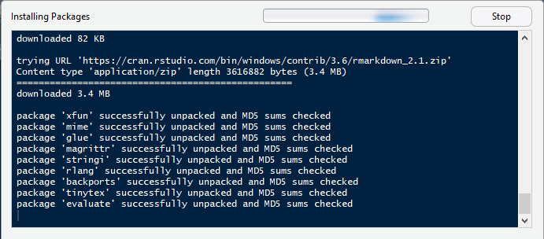
3.\ Give a name to the document (example: sample). Select 'HTML' or 'PDF' as your choice of output.
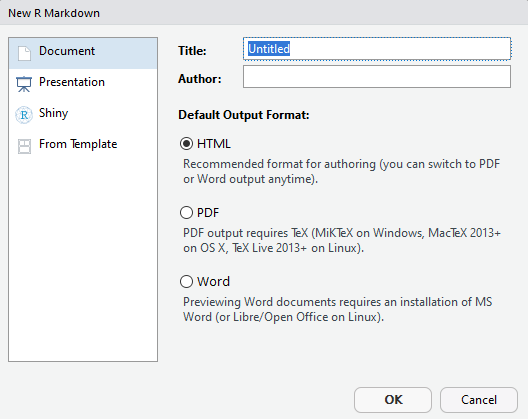
4.\ This will create a sample markdown document with some examples in it. You may change the 'title' in the document to "Sample Markdown". Save the file.
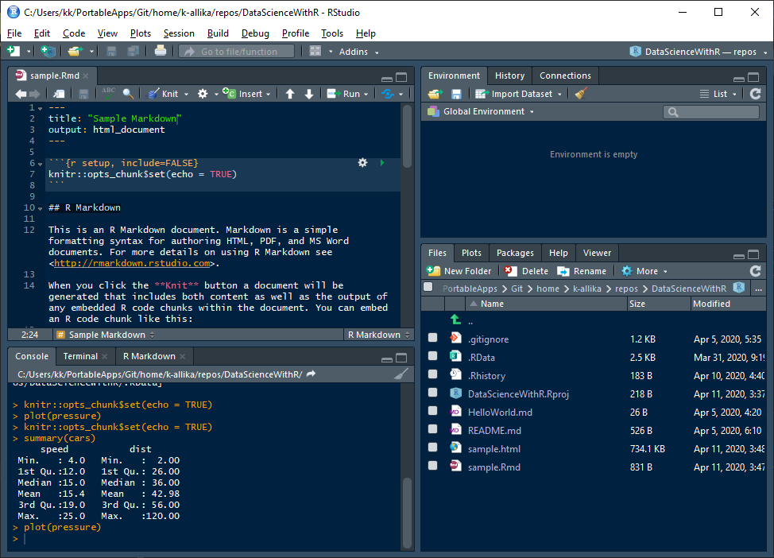
5. Press CTRL+SHIFT+K or click the "Knit" button in the fourth quadrant of R Studio or go to File > Knit Document to generate an HTML or PDF output of the markdown file.
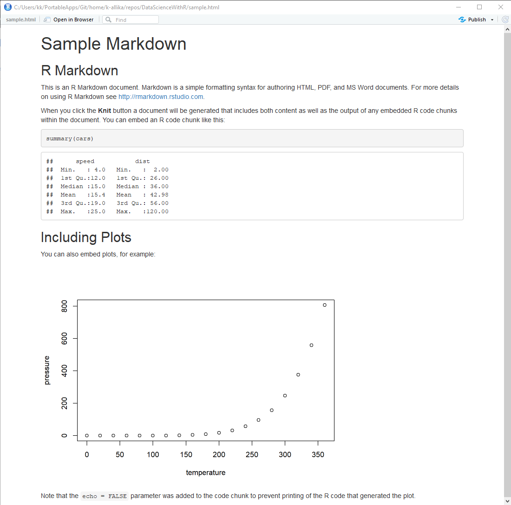
[^top]
Installing R in JupyterLab (Optional)¶
This step is completely optional and you can safely skip it. JupyterLab is a web-based interactive development environment for Jupyter notebooks, code, and data. It supports over 40 programming languages including R. I started using JupyterLab a short time ago while learning Python and am quite impressed by its features, interactivity, improvements and its community. This is my attempt to run R in JupyterLab environment.
Follow the steps to install R in JupyterLab. If you already have JupyterLab installed, you can directly go to step x.
1. Anaconda vs Miniconda: To use JupyterLab, you need to have Anaconda or Miniconda installed. Follow either 1a or 1b.
1a. Anaconda comes bundled with Python and a lot of packages commonly used in data science. It also comes with a GUI called Navigator and it's own IDE called Spyder. If you are a beginner, install Anaconda from https://www.anaconda.com/distribution/. Select Python 3+ version. Install will default settings.
1b. Miniconda is a small, bootstrap version of Anaconda that includes only conda, Python, the packages they depend on, and a small number of other useful packages. I prefer Miniconda instead of Anaconda as I don't need Anaconda's GUI and IDE and I am more comfortable with using CLI(Command Line Interface) for installing and maintaining packages. Also, I don't need all the packages that come with Anaconda. I can install the packages I want when I need them. Download Miniconda from https://docs.conda.io/en/latest/miniconda.html. You can install with default settings, or if you prefer a portable version of it, open the command prompt in administrator mode and go to the directory where you downloaded Minoconda exe file and type the following
Miniconda3-latest-Windows-x86_64.exe /InstallationType=JustMe /AddToPath=0 /RegisterPython=0 /NoRegistry=1
2. Creating a virtual environment: In Anaconda(or Miniconda. In future, I am going to use the term Anaconda for both Anaconda and Miniconda because they both have the same core. Whatever works in one, works in the other too.), we have an option to create virtual environments. Each environment can have packages and code specific to its project. This is useful because different projects require different packages and it's not advisable to install all packages at one place in the base(base is the default environment that comes with Anaconda). Also, if you don't want to mess up the base when you are experimenting. Always create a new environment, experiment and if something goes wrong then delete it and create a new one without having to reinstall Anaconda.
2a. Open 'Anaconda Prompt' from Windows Start Menu
2b. Create a virtual environment. Enter the following in the command prompt.
conda create --name jhu.
I created an environment called 'jhu'. The name is arbitrary. You can name it anything you want.
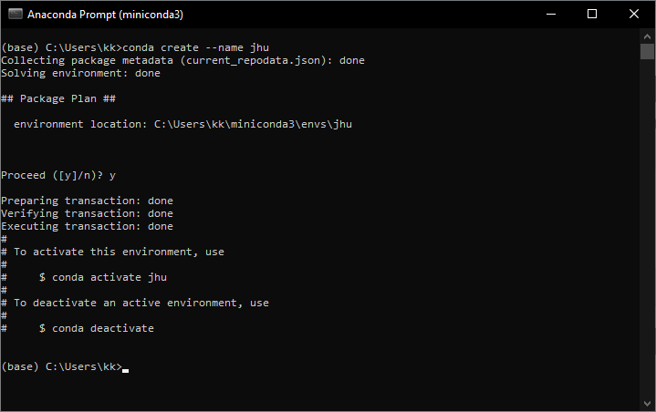
2c. Activate the virtual environment
conda activate jhu
Replace 'jhu' with your environment name. You should see the name of the environment in brackets on the left of the prompt.
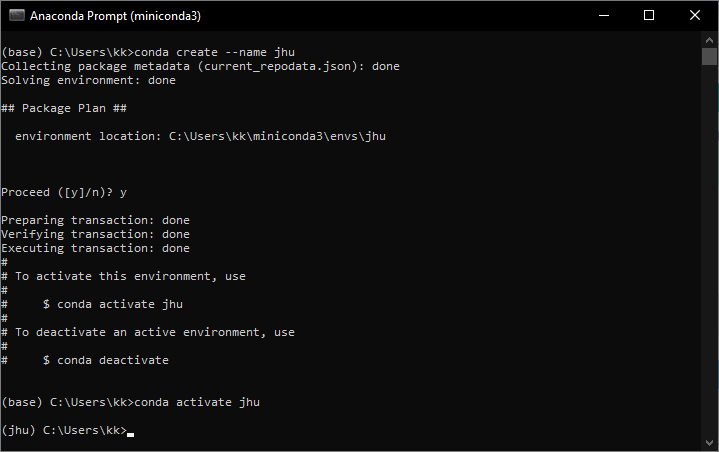
3. Install JupyterLab
conda install -c conda-forge jupyterlab
This will show a list of dependency packages to be installed. Press 'y' and continue.
4. Install R in JupyterLab
conda install -c r r-essentials
This will install R along with essential packages to use R in JupyterLab. Now open JupyterLab by typing the following
jupyter lab
If everywthing went well, you should see JupyterLab launcher with R installed alongside Python.
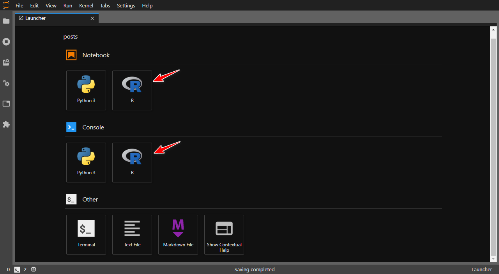
Let's run a small piece of R code that I copied from here and see if it works.
library(dplyr)
library(ggplot2)
ggplot(data=iris, aes(x=Sepal.Length, y=Sepal.Width, color=Species)) + geom_point(size=3)
![](data:image/png;base64,iVBORw0KGgoAAAANSUhEUgAAA0gAAANICAMAAADKOT/pAAAAQlBMVEUAAAAAujgzMzNNTU1h%0AnP9oaGh8fHyMjIyampqnp6eysrK9vb3Hx8fQ0NDZ2dnh4eHp6enr6+vw8PDy8vL4dm3///+/%0AbmhWAAAACXBIWXMAABJ0AAASdAHeZh94AAAgAElEQVR4nO2djVri2rZE4wZR2v7xeOH9X/US%0ABIEQstZMFaTIrPF9p7eITGeXNQ4YIN1sjTEwzdQLGDMHLJIxBCySMQQskjEELJIxBCySMQQs%0AkjEELJIxBBCR/gcA3fju47ye0LjLebTmk7FIj5iXaz2LdIvFzwctP5+mhYOTq6ni61mkG5zc%0AWVx8nhYOTq6miq9nkfpZbC2S1jjx9SxSL4uTP5ceWaSpxomvZ5F6ORfp51ek/1ruuJYxz0VR%0ApMW2c4/kgw2TjxNfz/dIPXTc2VokgXHi61mkHhaLy0PeFklgnPh6FukWfminNU58PYt0i3OR%0Azu6caOHg5Gqq+HoW6RY/90SXj/Jo4eDkaqr4ehYpCC0cnFxNFV/PIgWhhYOTq6ni61mkILRw%0AcHI1VXw9ixSEFg5OrqaKr2eRgtDCwcnVVPH1LFIQWjg4uZoqvp5FCkILBydXU8XXs0hBaOHg%0A5Gqq+HoWKQgtHJxcTRVfzyIFoYWDk6up4utZpCC0cHByNVV8PYsUhBYOTq6miq9nkYLQwsHJ%0A1VTx9SxSEFo4OLmaKr6eRQpCCwcnV1PF17NIQWjh4ORqqvh6FikILRycxzZ1s4M4Lo52ehYp%0ACC0cnEc2dXOANG4M2ulZpCC0cHAe2NTNJm6SRaLNozWfjEWKzrNIDx5nkarDwXlcUzebESZZ%0AJNo8WvPJWKTgPIv06HEWqTocHIs033EWqTocHIs033EWqTocHB9smO84i1QdDo5Fmu84i1Qd%0ADo6fkJ3vOItUHQ6OXyI033EWqTocnFxNFV/PIgWhhYOTq6ni61mkILRwcHI1VXw9ixSEFg5O%0ArqaKr2eRgtDCwcnVVPH1LFIQWjg4uZoqvp5FCkILBydXU8XXs0hBaOHg5Gqq+HoWKQgtHJxc%0ATRVfzyIFoYWDk6up4utZpCC0cHByNVV8PYsUhBYOTq6miq9nkYLQwsHJ1VTx9SxSEFo4OLma%0AKr6eRQpCCwcnV1PF17NIQWjh4ORqqvh6FikILRycXE0VX88iBaGFg5OrqeLrWaQgtHBwcjVV%0AfD2LFIQWDk6upoqvZ5GC0MLBydVU8fUsUhBaODi5miq+nkUKQgsHJ1dTxdezSEFo4eDkaqr4%0AehYpCC0cnFxNFV/PIgWhhYOTq6ni61mkILRwcHI1VXw9ixSEFg5OrqaKr2eRgtDCwcnVVPH1%0ALFIQWjg4uZoqvp5FCkILBydXU8XXs0hBaOHg5Gqq+HoWKQgtHJxcTRVfzyIFoYWDk6up4utZ%0ApCC0cHByNVV8PYsUhBYOTq6miq9nkYLQwsHJ1VTx9SxSEFo4OLmaKr6eRTLGjMP3SI+Yl2s9%0A3yMFoYWDk6up4utZpCC0cHByNVV8PYsUhBYOTq6miq9nkYLQwsHJ1VTx9SxSEFo4OLmaKr6e%0ARQpCCwcnV1PF17NIQWjh4ORqqvh6FikILRwc7rjNDupAi0SbR2s+GYt0xeYAcaRFos2jNZ+M%0AReqy2fBNski0ebTmk7FIXSyS2DiLVB0ODm/cZnMHkywSbR6t+WQsUgeLpDbOIlWHg2OR5jvO%0AIlWHg2OR5jvOIlWHg+ODDfMdZ5Gqw8GxSPMdZ5Gqw8HxE7LzHWeRqsPB8UuE5jvOIlWHg5Or%0AqeLrWaQgtHBwcjVVfD2LFIQWDk6upoqvZ5GC0MLBydVU8fUsUhBaODi5miq+nkUKQgsHJ1dT%0AxdezSEFo4eDkaqr4ehYpCC0cnFxNFV/PIgWhhYOTq6ni61mkILRwcHI1VXw9ixSEFg5OrqaK%0Ar2eRgtDCwcnVVPH1LFIQWjg4uZoqvp5FCkILBydXU8XXs0hBaOHg5Gqq+HoWKQgtHJxcTRVf%0AzyIFoYWDk6up4utZpCC0cHCGx8Xf8fpM1Zr7OItUHQ7O0Lgx52B4pmrNfZxFqg4HZ2DcqLMC%0APVO15j7OIlWHg2OR5jvOIlWHg3N73Lgzpz5TteY+ziJVh4NjkeY7ziJVh4NjkeY7ziJVh4Nj%0AkeY7ziJVh4Pjgw3zHWeRqsPBsUjzHWeRqsPB8ROy8x1nkarDwfFLhOY7ziJVh4OTq6ni61mk%0AILRwcHI1VXw9ixSEFg5OrqaKr2eRgtDCwcnVVPH1LFIQWjg4uZoqvp5FCkILBydXU8XXs0hB%0AaOHg5Gqq+HoWKQgtHJxcTRVfzyIFoYWDk6up4utZpCC0cHByNVV8PYsUhBYOTq6miq9nkYLQ%0AwsHJ1VTx9SxSEFo4OLmaKr6eRQpCCwcnV1PF17NIQWjh4ORqqvh6FikILRycXE0VX88iBaGF%0Ag5OrqeLrWaQgtHBwcjVVfD2LFIQWDs60TS2+ld0i0ebRmk/GIsHzKk6uYpFo82jNJ1Ml0uLn%0Agx2nT9PCwZmwqTWn+7JItHl8BTjUiPQjz+Lnjz20cHAs0nzHzUakxdYi3abqlMgWiTbvHhIw%0AKIu02FqkASzSvcfNWqT/Wu631RNxLtLUu5jpKIq02PoeaQjfI9173DzukS7csUg9+GDDncfN%0ARKRvDhd+/thDCwfHIs133DxE2uN7pCH8hOx9x1mk6nBw/BKh+Y6bm0j7ow5+ZYPCOPH1LFIQ%0AWjg4uZoqvp5FCkILBydXU8XXs0hBaOHg5Gqq+HoWKQgtHJxcTRVfzyIFoYWDk6up4utZpCC0%0AcHByNVV8PYsUhBYOTq6miq9nkYLQwsHJ1VTx9SxSEFo4OLmaKr6eRQpCCwcnV1PF17NIQWjh%0A4ORqqvh6FikILRycXE0VX88iBaGFg5OrqeLrWaQgtHBwcjVVfD2LFIQWDk6upoqvZ5GC0MLB%0AydVU8fUsUhBaODjYuOt3uEqtd/d52uMsUnU4OMi4vnMuCK33gHna4yxSdTg4wLjeswDprPeI%0AedrjLFJ1ODgWab7jLFJ1ODjjx/WfKVVmvYfM0x5nkarDwbFI8x1nkarDwbFI8x1nkarDwbFI%0A8x1nkarDwfHBhvmOs0jV4eBYpPmOs0jV4eD4Cdn5jrNI1eHg+CVC8x1nkarDwcnVVPH1LFIQ%0AWjg4uZoqvp5FCkILBydXU8XXs0hBaOHg5Gqq+HoWKQgtHJxcTRVfzyIFoYWDk6up4utZpCC0%0AcHByNVV8PYsUhBYOTq6miq9nkYLQwsHJ1VTx9SxSEFo4OLmaKr6eRQpCCwcnV1PF17NIQWjh%0A4ORqqvh6FikILRycXE0VX88iBaGFg5OrqeLrWaQgtHBwcjVVfD2LFIQWDk6upoqvZ5GC0MLB%0AydVU8fUsUhBaODiX467f8YrN6xKeb5FOLHfErrdIA9zxZ9d3DgZkXpcR8y3SkeWByPUWaWTY%0A2LjeswIB87qMmW+RDiyXwyb1Xm+RxoUNjrNIwuMsUh93Chsb13/m1PHzuoyab5G+WS6HTeq/%0A3iKNChscZ5GEx1mkXu4TNjjOIgmPs0i93CdscJxFEh5nkXq5T9joOB9sEB7ngw193ClscJxF%0AEh5nkfq4U9joOIJHfkL2XuOGPfITstSw4XGoRn6J0B3HDWnUf71FGkC7Cl5PaJxFqg4HJ1dT%0AxdezSEFo4eDkaqr4ehYpCC0cnFxNFV/PIgWhhYOTq6ni61mkILRwcHI1VXw9ixSEFg5OrqaK%0Ar2eRgtDCwcnVVPH1LFIQWjg4uZoqvp5FMsaMw/dIj5iXaz3fIwWhhYOTq6ni61mkILRwcHI1%0AVXw9ixSEFg5OrqaKr2eRgtDCwcnVVPH1LFIQWjg4uZoqvp5FCkILBydXU8XXs0hBaOHg5Gqq%0A+HoWKQgtHJzLcaW3gnevv/76Z6rW3MdZpOpwcM7HlU5O0r2+7+ufqVpzH2eRqsPBORtXOl1W%0A9/rer3+mas19nEWqDgfHIs13nEWqDgfnNG6zGTape33/1z9TteY+ziJVh4NjkeY7ziJVh4Nj%0AkeY7ziJVh4NjkeY7ziJVh4Pjgw3zHWeRqsPBsUjzHWeRqsPB8ROy8x1nkarDwfFLhOY7ziJV%0Ah4OTq6ni61mkILRwcHI1VXw9ixSEFg5OrqaKr2eRgtDCwcnVVPH1LFIQWjg4uZoqvp5FCkIL%0ABydXU8XXs0hBaOHg5Gqq+HoWKQgtHJxcTRVfzyIFoYWDk6up4utZpCC0cHByNVV8PYsUhBYO%0ATq6miq9nkYLQwsHJ1VTx9SxSEFo4OLmaKr6eRQpCCwcnV1PF17NIQWjh4ORqqvh6FikILRyc%0AXE0VX88iBaGFg5OrqeLrWaQgtHCKb2nt0vn66M3LPFO17j1uuYM4Lo5FqgyndJKFLp2vj948%0Aup7euEeutzxAGjcGi1QXTum0P106Xx+9eXQ9wXEPXG+5jJtkkYKQwrFIU8+zSDjTi7TZxFTo%0AfH305tH1FMc9br3lcoRJFikIJxyLNPk8i4RjkQrrKY6zSHpYpMJ6iuMskh7Ti+SDDZPP88EG%0AHItUWk9wnEXSQ0AkPyE79Tw/IYujIJJfIjTxPL9ECEdDJJinburk87THWaTqcHByNVV8PYsU%0AhBYOTq6miq9nkYLQwsHJ1VTx9SxSEFo4OLmaKr6eRQpCCwcnV1PF17NIQWjh4ORqqvh6FikI%0ALRycXE0VX88iBaGFg5OrqeLrWaQgtHBwcjVVfD2LFIQWDk6upoqvZ5GC0MLBydVU8fUsUhBa%0AODi5miq+nkUKQgsHJ1dTxdezSEFo4eDkaqr4ehYpCC0cnFxNFV/PIgWhhYOTq6ni61mkILRw%0AcHI1VXw9ixSEFg5K963mpcvReTAWiTaP1nwyMxCpe/KT0uXoPAIWiTaP1nwyZZEWO84//rkg%0AIlL3dFyly9F5DCwSbd59NMApirT4+ePsv9/QwoGwSDMfZ5Gqw0HYbC6bX7ocnUfBItHm8RXg%0AUPc70uLiP0do4SBYpLmPm6NIP78i/ddyr51CnBe/5nJ0njE1VIh0Or5w8TDP90j1+B6JNu8e%0AEjAI3SN1PqaFA9HtfelydB4Di0SbR+4/DYtUmsfAItHmkftPI3TUTvGhnZ+Qnfu4mYp0dudE%0ACwelW/vS5eg8GItEm3cXCwjUv7Jhsb18lYOQSNmaKr6eRQpCCwcnV1PF17NIQWjh4ORqqvh6%0AFikILRycXE0VX88iBaGFg5OrqeLrWaQgtHBwcjVVfD2LFIQWDk6upoqvZ5GC0MLBydVU8fUs%0AUhBaODi5miq+nkUKQgsHJ1dTxdezSEFo4eDkaqr4ehYpCC0cnFxNFV/PIgWhhYOTq6ni61mk%0AILRwcHI1VXw9ixSEFg5OrqaKr2eRgtDCwcnVVPH1LFIQWjg4uZoqvp5FCkILp/iW1ML16Dtk%0Ar6+nduFlx9D1yx1Dl6/Rbr5FCsIKp3SShML16Dkb+q4nduHlwK3rlwduXe5Du/kWKQgpnNJp%0AewrXo2cR6r2e14WXl2GTlstLc7qXe9FuvkUKQgrHIlmk+nm05pOZXqTNZrjqheu7V5cu142n%0AdeHlZdik5fLSnO7lfrSbb5GCcMKxSBYpMI/WfDIWySKJj7NIdeFYJIsUmEdrPpnpRfLBBh9s%0ACMyjNZ+MRbJI4uMsUm04w0X3E7LXaDffIgWhheOXCPklQrXzaM0noyESTK5XhYqvN51IXx9v%0Ai2b1UW49UvsbI4Hb0sLBydVU8fUmE+nfotmz+Cq13iI9ZpzXExpXL9Jr875T6HPVrIFWj8Qi%0APWJervUmE+lwR/PV/nf3v7dm9bm//N7sDds59tYs1scvPH3616J5LT8eHMYiPWJervUmE+mt%0A+XMqdvN+fJC3f8D3uvvga//R20Gkn0+v948HQZMs0iPm5VpvMpE+d/cs69+f38VuVl/b/YO8%0AX+0f61aUdfO+/Xu4uzr7dNN87j69GJpcpivS+vD7Wo1gtHBwcjVVfL0Jj9r9em3vZf62xW7+%0A7cxq73Fe911u74hem8NRiLbep08vmvc/N0fW0hFm3TQWiT8v13qTPo/0b/2+an4ff1/6vvs5%0ANvqn1Zef/rO783j9jJrToSPMovlVf1taODi5miq+3uRPyLYP0wIi7ex7bRZ/64vf+z07FyO/%0AM9HCwcnVVPH1Jjxq9/XT4vYXn91Du9XxMVxLz0O7Ix/oU0tXD+1Kz2WdQQsHJ1dTxdebTKR1%0As9rdr3ytvw/MrbZfq/YB1ro9qvC7Var96N/xrun06UXzd/dp8sGGt1X9g0VaODi5miq+3nQP%0A7V4Pr2z43IvUfrQ9HvTeH3s4HvFuRTp9+vvAQOB3mj7ORWrOqbgtLRycXE0VX2/C35E+dvYs%0A1l/7Mn+umvf9vcLne7O/q9r9LrS7+v3z8BvM6dPrRbMAPbJID5mXa73JDzZ8lzkuA4KfkH3E%0AvFzrWaQgtHBwcjVVfD2LdPr2i5pjGLRwcHI1VXy99CItnvV3pOg7YstMWi3wHbLlm4fGxZEQ%0A6dGcC/Nx5lHNa2Fp4WBEz9FQw4TVAs/ZUHPzwLgxpBdp+5SvbIieNaiK6aoFnkWo6ub140Zh%0AkYLQwoGwSOGb148bRXqRnvJ5pM3m0pzu5YnXi44Dz7Rad/Px600xziJVh4NgkeI3H7/eFOOe%0AT6SW/WvtPldvNbelhYNgkeI3H7/eFOOeUqS34wvRa0yihYNgkeI3H7/eFOPqRfq/AcYKUkv/%0AUbuv53lo54MN8ZvXjxuFRdpuV833Q7vnuUeySPGb148bhUU6vmPj+x0dRWjhYHS9IXjkJ2QR%0ALNK2fXvha9O8/qp6nywtHJSuNqhGfokQhEUKQgsHJ9erQsXXs0hBaOHg5Gqq+HrpRWqa7fM9%0AIXuXcV5PaJxFqg4HJ1dTxddTEKn9NdkP7SYf5/WExo0Q6XjgdiKRXt9//4vclhYOTq6miq83%0AuUinpxKnemi34+3Xn9pzRNLCwcnVVPH1nkwkznvSz6d8/fm1+n469v2j5q6JFg5OrqaKrze1%0ASOcvt5xEpD3/Pt4XPtjg9XTG0UU61vt4Zv3Tn9f/rab3q/+9P/ocLMbg1InUHP44/2/f52J3%0AVb5HesS8XOuJ3yM15//tE+mmG0Ocf/Hn7/UqcsCBFg5OrqaKrze1SKWDDYd7iePzpecinf8T%0ASrFHZd2jdpFD4LRwcHI1VXw9dZEOupzfM509lGuai0/WcilS3au+j9DCwcnVVPH1Jhep4gnZ%0A5qZIhN+RfI90r3m51ptepMGXCNUebBj/0G73O9L3v9S0+vXnid7Yd4dxXk9oHP1Fq51D3LcO%0Af8NH7d581M7rCY17vld///DvzSIpjxNfzyK13OV5pOv3fm8Hrw++Vxx/a3kXqAsvO4jjrt47%0AHnwveenm1+sO375IepF+XmtXecShNoi+s5FsB64Pnr2EcbKTLkAXXg6Qxl2dzSR4dpPSzfvW%0AHbp9BelFOjwZ+5f86u/TUf3+cLrX9359cDzK+C68vPRUE6hW9/xawfNtlW7eu+7A7WtIL9Kd%0A3o9kkSwSxNOJFKUuhs2mr+rbm9f3f31wPMroLry89FVzfLWWy8sqdy+DN+9f9/btq7BIZ5/m%0AHWywSBYJo1qkKbFIvVik/ttX4XukIHUxWCSLhGGRvuktug82VNItcrDYpZv7YAMJi9SLRbpx%0A+xrSi3Svf/qyr+h+QraWbpGDxS7dfNgjPyFby2P+DdnrnvslQvV0exzsdenmQxqN+HYWKQwt%0AHJxcrwoVX88iBaGFg5OrqeLrWaQda59E/w7zcq2nIFL7eHVKkdb3+R2pEA5OrqaKrze9SMcj%0AKNOJtGj+rZrPr1Xzt+K2tHBwcjVVfL3JRTod04+K1HP/UfnLT+fLdvdEv5o/269mVXFbWjg4%0AuZoqvt4Ti1Q2pPLLdiL9aT6or7WrCAcnV1PF15tapPPXPU0l0lvz+7N53f61SMrjxNfTFqk5%0A/nk8idC2Ob9wfZKhbedLq0RqDdq/3fzdIumOE1/vOUT6OYVd57x2Pae4u/jSOpG2f1632/em%0AWVd4ZJGmGie+nrZIxxNC9v7DE50TsPa5VSlSBFo4OLmaKr7e1CIVDjYcRTo7h/7pxPoWSXpe%0ArvXERTo8rLsQZnt6iEcS6as9a/HqV41HFmmqceLrTS5S4QnZfpEurNmiIn0uvu/xFj73t/A4%0A8fWmF6nwEqHm/I/uhaGDDfUirZrVTqHPlY/aKY8TX09BpCuuS392eLv68He1SIffub78PJLy%0AOPH15EW6B1dPyH6fZtUvEVIeJ76eRdrxvvrXPrRbPfZ3pNJbXIvvoJ11U6/fojo4r/SO1uC4%0AOBZpe/lu89LDO1Y4pZMuVJzTYcYi9Z00YWBe6RwLwXFjsEjTiFQ6DVDNWYbmK1LvaXxuzyud%0A9Sc4bhQWKQgpHIs0hEWySHXhbDbDJnWv7/362Yq0XPZV/+a8/i8fPW4cFqnlo/1nL1dV/7wL%0AJxyLNIRFCog0JR2Rvvb/rPnuV6XHvdXcIg1hkZ7zHum9WbdPyv5+4PNIFmkIi/ScIjXN6X9F%0ASOEMe+SDDaGjA8Me+WDD3bBIpfUmHmeRnlKkw0O79UNftDrskZ+QvRbDT8j2IiTS1zRvoxjS%0AqO/6q6+fsUh+idAzirTd/nptmtf1V81taeHgzFqku8/THvekIgWghYOTq6ni6ymI1N7tWqTJ%0Ax3k9oXEjRDr+IjiVSF/r9uLvRfNW8yuSRZpqnPh6k4t0OjQ5IFL3LqS5fVUNF7dZtEe9/+4P%0ANtT8kkQLBydXU8XXew6RyJyL9NGsdv68rtp/3aXmDJG0cHByNVV8valFOn/5xiQirZr2xCft%0AU0hfzaLitrRwcHI1VXw9bZGOZ4LcnxXocNrvn7MF3TwFSkik/S1+7++MfPIT5XHi6z2PSCdr%0AtueXe07KFRJp0V5YN/8sktcTGsd+aHdtS489F/2PirQ/hdDr67Y94OCzCAmPE19vapEKBxuC%0AIlU+trs82PC+/dP82v2KtGr/sTGLpDpOfD1xkU6nLK4RqXRiyD6R9i+0aw98N81rxU0t0lTj%0AxNebXKTCE7IRkUb9jrT99/r9VGzdP49kkaYaJ77e9CIVXiJ0dSSh6RepOV0bEykILRycXE0V%0AX09BpCuuSv9zt3N++Ht7Zs/P4e/4PVIQWjg4uZoqvp68SFwN8Am0cHByNVV8vecSqfq3oGEs%0A0iPm5VrvuUSqfu3CMBbpEfNyrfdkInG4j0jFt4YHwy7MK71TvUT7z7tdfmY7eP3111/QfS93%0A6XKU7u0768S/3eXfFl6XPC6vSBUnKwmJVJhXOndKieM/OHprve71fV9/RvfsIqXLUbq376wz%0A5tud/20J65LHzUWkxY6+j2+KVHP6rIhIhXmls3mVOP0T2P3rda/v/foTp2fV6y5H6d6+s86o%0Ab3f2t2WsSx43E5EWP39cfry1SL3jLJJF6iUs0mZzWe3u5Z5wBinM6x9fz8tLnxnbm9f3f/0P%0Ay+VlV0qXo3Rv31ln3Lc7/W0p65LH1Ys0JXW/I1kki2SRBhkp0n8t/V973uy+y1EK89Dx502s%0Aub7w9edVqbkcpXv7zjrotyOvy/7bC1Mh0ukAg++RfI9Uge+RbuKDDafrBz3ywQb+OItkkSou%0AR7FImtzh8LefkL1oSulylO7tO+uM+XZzeUJ2Su4hkl8i5JcIEcfNRKSfVzMszj7+JhbHQDg4%0AuV4VKr7eZC9anRK/+vsR83KtZ5GC0MLBydVU8fUsUhBaODi5miq+nkUKQgsHJ1dTxdezSEFo%0A4eDkaqr4ehYpCC0cnFxNFV/PIgWhhYOTq6ni61mkILRwcHI1VXw9ixSEFg5OrqaKr2eRgtDC%0AwcnVVPH1LFIQWjg4uZoqvp5FCkILBydXU8XXs0hBaOHg5Gqq+HoWKQgtHJxcTRVfzyIFoYWD%0Ak6up4utZpCC0cHByNVV8PYsUpD4K9B2yRe7b1OA7ZLuUbt69XHgHbHG9MLH0im9xtUhBaoNA%0Az9lQwT1/dsFzNnQp3bx7uXBOhuJ6I4ikFzuXCgWL9A16FqEa7vizC55FqEvp5t3L3fPs9H67%0AgfXGEEiv5jRAFilIZQ4WySJBWKQ9m02fSU8j0svLZVW7lwuUbt69vFxeVrX/291eD/zbluiu%0AB46rwyLtsUgWCcMi7bFIFgnDIu2xSBYJwyJ944MNQzfvXvbBhuF5tOaTsUileRbpHIt0Az8h%0AW5zXLWqwuKWbdy93i9r37fyErBx+iVDFvG5Pg70t3bx7udvT62/nlwjJ4RetPmJervUsUhBa%0AODi5miq+nkUKQgsHJ1dTxdezSEFo4eDkaqr4ehYpCC0cnFxNFV/PIgWhhYOTq6ni61mkILRw%0AcHI1VXw9ixSEFg5OrqaKr2eRgtDCwcnVVPH1LFIQWjg4uZoqvp5FCkILBydXU8XXs0hBaOHg%0A5Gqq+HoWKQgtHJxcTRVfzyIFoYWDk6up4utZpCC0cHByNVV8PYsUhBYOTq6miq9nkYLQwsHJ%0A1VTx9SxSEFo4OPdtauktq8H3jJZuXroMvkG3tF6Uq7/98LhiWFdYpNpwcO4pUukkCsGzGJRu%0AXroMnjKitF6Unr/90LiKsK6wSLXh4NxRpNJpfYLn1SndvHQ5eNagqi8H0uv72w+MqwnrCotU%0AGw6ORbqBRXoQFqkwb7m8/OG/vFx2s3t9YVzp5qXL3dsXqPvy8en1/u1vj6sKa3g9WvPJWKTC%0APIs0hEU6YpEK8yzSEBbpiEUqzLNIQ1ikIxapNK/7o+82s6YaPtgw8OVFLFJtODgW6QYW6UFY%0ApOK87o++28yKavgJ2YEvL2KRasPB8UuEblP+cr9ECMciPWJervX8otUgtHBwcjVVfD2LFIQW%0ADk6upoqvZ5GC0MLBydVU8fUsUhBaODi5miq+nkUKQgsHJ1dTxdezSEFo4eDkaqr4ehYpCC0c%0AnFxNFV/PIgWhhYOTq6ni61kkY8w4fI/0iHm51vM9UhBaODi5miq+nkUKQgsHJ1dTxdezSEFo%0A4eDkaqr4ehYpCC0cnFxNFV/PIgWhhYOTq6ni61mkILRwcHI1VXw9ixSEFg5OrqaKr2eRgtDC%0AwRkeF3xv9tW80u0L756OfvvSW83Vm2+RgtDCwRkaFzxbyNW80u0L5/OIfvvSyU+66xHQHmeR%0AqsPBGRgXPH/V1bzS7QtnmLiME7oAAA8qSURBVIp++9LpuLrrMdAeZ5Gqw8GxSAja4yxSdTg4%0At8e9vIwx6TSvdPvlctCk6Lfvjusfr918ixSEFg6ORULQHmeRqsPBsUgI2uMsUnU4OBYJQXuc%0ARaoOB8cHGxC0x1mk6nBwLBKC9jiLVB0Ojp+QRdAeZ5Gqw8HxS4QQtMdZpOpwcHK9KlR8PYsU%0AhBYOTq6miq9nkYLQwsHJ1VTx9SxSEFo4OLmaKr6eRQpCCwcnV1PF17NIQWjh4ORqqvh6FikI%0ALRycXE0VX88iBaGFg5OrqeLrWaQgtHBwcjVVfD2LFIQWDk6upoqvZ5GC0MLBydVU8fUsUhBa%0AODi5miq+nkUKQgsHJ1dTxdezSEFo4eDkaqr4ehYpCC0cnFxNFV/PIgWhhYOTq6ni61mkILRw%0AcHI1VXw9ixSEFg4Od1zpLa3d64tvgb1cr/CG2gqk0yuMi//tLVJtODjMcaWTLHSvrzgpw/l6%0AhVM8VCGcXmHcmL+9RaoNB4c4rnTan+71NacJOluvcNKhOnTTK4wb9be3SLXh4FgkBIuEY5E6%0AvLwMm9G9vvT1nfWWS4ZJsukVxo3721uk2nBwLBKCRcKxSB0s0h3HWaReRifdDQfHIiFYJByL%0A1KXkRff6Co98sOGIDzb0MTLn63BwLBKCRcKxSFeUvOheX/bIT8j+MOZvb5Fqw8HxS4SeZlz8%0Ab2+RasPByfWqUPH1/KLVILRwcHI1VXw9ixSEFg5OrqaKr2eRgtDCwcnVVPH1LFIQWjg4uZoq%0Avp5FCkILBydXU8XXs0hBaOHg5Gqq+HoWKQgtHJxcTRVfzyIFoYWDk6up4utZpCC0cHByNVV8%0APYsUhBYOTq6miq9nkYLQwsHJ1VTx9SxSEFo4OLmaKr6eRQpCCwcnV1PF17NIQWjh4ORqqvh6%0AFikILRycXE0VX88iBaGFg5OrqeLrWaQgtHBwcjVVfD2LFIQWTpirtytfjiu+9btA6a3k4XdL%0Ax/625fGD88D3cuNYpCC0cIL0nEDjfFzFyUgGKZ3cBD0PToGa8QPz4LOL4FikXhY7zj/+uTCV%0ASH2ndDobV3N6rCFKp9uCT3E4TNX42/Pw813hWKQ+Fj9/nP33G1o4MSySRdLj+URaLnvKchr3%0A8oKZ1L1993Lvty9R/7etG39z3qjtLBKBut+RFhf/OUILJ4RFskiCxET6+RXpv5Z77TTMeVd6%0Arj4v/pjx3dt3Lxe+PQo4/s7bmZtUiXTxyG7qgw2+R/I9kiAhkToXaOHE6KuKDzZEbl4/bhQW%0A6QaLG5do4cSwSBZJjwqRFpcfTS6Sn5D1E7J6VDwhe/nh2UVaOGGumuKXCEVuHhoXxyL1sTge%0AqltsL1/l4BetTjZOfD2LFIQWDk6upoqvZ5GC0MLBydVU8fUsUhBaODi5miq+nkUKQgsHJ1dT%0AxdezSEFo4eDkaqr4ehYpCC0cnFxNFV/PIgWhhYOTq6ni61mkILRwcHI1VXw9ixSEFg5OrqaK%0Ar2eRgtDCwcnVVPH1LFIQWjg4uZoqvp5FCkILBydXU8XXs0hBaOHg5Gqq+HoWKQgtHJxcTRVf%0AzyIFoYWDk6up4utZpCC0cHByNVV8PYsUhBZOmKu3wHJ/dug7bK+wSLR5tOaTeUaRek7KwPzZ%0Aoed86MEi0ebRmk/mCUXqO00Q8WeHnoWoD4tEm0drPhmLVDMexSLR5tGaT+b5RHp56ak672fX%0AOx7FItHm0ZpPxiLVjEexSLR5tOaTsUg141EsEm0erflkLFLNeBSLRJtHaz6Z5xPJBxvUm2+R%0AgtDCiWGRxJtvkYLQwgnSU3Q/ITvfcRapOpwwVz33S4TmO84iVYeDk6up4utZpCC0cHByNVV8%0APYsUhBYOTq6miq9nkYLQwsHJ1VTx9SxSEFo4OLmaKr6eRQpCCwcnV1PF17NIQWjh4ORqqvh6%0AFikILRycXE0VX88iBaGFg5OrqeLrWaQgtHBwcjVVfD2LFIQWDk6upoqvZ5GC0MLBydVU8fUs%0AUhBaODi5miq+nkUKQgsHJ1dTxdezSEFo4eDkaqr4ehYpCC0cnFxNFV/PIgWhhYOTq6ni61mk%0AIOOj2exA4z2D/Y7Wid8hW/722s23SEHGBrM5gEe8h32OhYnP2VDz7bWbb5GCjMxls6GaxD7r%0Az8RnEar69trNt0hBRuZikeBvr918ixRkXCybDdWklxdu89nz9tRHVffttZtvkYKMi8Ui4d9e%0Au/kWKci4WCwS/u21m2+RgoyLxSLh3167+RYpyMhcfLAB/vbazbdIQUbmYpHgb6/dfIsUZGww%0AfkIW/fbazbdIQcZH45cIYd9eu/kWKQgtHJxcrwoVX88iBaGFg5OrqeLrWaQgtHBwcjVVfD2L%0AFIQWDk6upoqvZ5GC0MLBydVU8fUsUhBaODi5miq+nkUKQgsHJ1dTxdezSEFo4eDkaqr4ehYp%0ACC0cnFxNFV/PIhljxuF7pEfMy7We75GC0MLBydVU8fUsUhBaODi5miq+nkUKQgsHJ1dTxdez%0ASEFo4eDkaqr4ehYpCC0cnFxNFV/PIgWhhYOTq6ni61mkILRwcHI1VXw9ixSEFg6OdFOXO4au%0Aj7+zXTs9ixSEFg6OsEjLA7euH3OuFe30LFIQWjg4uiItl8MmjTr7l3Z6FikILRwci4SgPc4i%0AVYeDIyvScjls0rgzJGunZ5GC0MLBsUgI2uMsUnU4OBYJQXucRaoOB8ciIWiPs0jV4eDIiuSD%0ADeR5tOaTsUh3nmeRuPNozSdjke49z0/IUufRmk/GIt1/nl8iRJxHaz4Zi/SIebnWs0hBaOHg%0A5Gqq+HoWKQgtHJxcTRVfzyIFoYWDk6up4utZpCC0cHByNVV8PYsUhBYOTq6miq9nkYLQwsHJ%0A1VTx9SxSEFo4OLmaKr6eRQpCCwcnV1PF17NIQWjh4ORqqvh6FikILRycXE0VX88iBaGFg5Or%0AqeLrWaQgtHBwcjVVfD2LFIQWDk6upoqvZ5GC0MLBydVU8fUsUhBaODi5miq+nkUKQgsHJ1dT%0AxdezSEFo4eDkaqr4ehYpCC0cnFxNFV/PIgWhhYOTq6ni61mkILRwcHI1VXw9ixSEFg5OrqaK%0Ar2eRgtDCwcnVVPH1LFIQWjg4uZoqvp5FCkILBydXU8XXs0hBaOHg5Gqq+HoWKQgtHJxcTRVf%0AzyIFoYWDk6up4utZpCC0cHByNVV8PYsUhBYOTq6miq9nkYLQwsHJ1VTx9SxSEFo4OLmaKr6e%0ARQpCCwcnV1PF17NIQWjh4ORqqvh6FikILRycXE0VX88iBaGFg5OrqeLrWaQgtHBwcjVVfD2L%0AFIQWDk6upoqvZ5GC0MLBydVU8fUsUhBaODi5miq+nkUKQgsHJ1dTxdezSEFo4eDkaqr4ehYp%0ACC0cnFxNFV/PIgWhhYOTq6ni61mkILRwcHI1VXw9ixSEFg5OrqaKr2eRgtDCwcnVVPH1LFIQ%0AWjgoLzuY856rWnMfZ5Gqw8F4OcCb+FzVmvu4uYi02NH3sYpILy93MOmZqjX3cTMRafHzx+XH%0AW4s02Tjx9SxSH+oivbzcw6Rnqtbcx81EpD0WSWqc+HoW6SZXIv3XcqeVYpyLNPUuJi9VIi3O%0A/+t7pMnHia/ne6RbKIvkgw1zHzcfkRYXH1ikyceJr2eR+llcfqQmkp+Qnfm4uYi06HwoJ5Jf%0AIjTvcTMRabE4vJxhsdV8ZcM9xnk9oXEzEWkAWjg4uZoqvp5FCkILBydXU8XXs0hBaOHg5Gqq%0A+HoWKQgtHJxcTRVfzyIFoYWDk6up4utZpCC0cHByNVV8PYsUhBYOTq6miq9nkYLQwsHJ1VTx%0A9SxSEFo4OLmaKr6eRQpCCwcnV1PF17NIQWjh4ORqqvh6FikILRycXE0VX88iBaGFg5OrqeLr%0AWaQgtHBwcjVVfD2LFIQWDk6upoqvZ5GC0MLBydVU8fUsUhBaODi5miq+nkUKQgsHJ1dTxdez%0ASEFo4eDkaqr4ehYpCC0cnFxNFV/PIgWhhYOTq6ni61mkILRwcHI1VXw9ixSEFg5OrqaKr2eR%0AgtDCwcnVVPH1LFIQWjg4uZoqvp5FCkILBydXU8XXs0hBaOHg5Gqq+HoWKQgtHJxcTRVfzyI9%0ALxr/DOdNvB6C+HrfWKRH4PUQxNf7xiI9Aq+HIL7eNxbpEXg9BPH1vpmJSMZMi0UyhoBFMoaA%0ARTKGgEUyhoBFMobALERatEy9xG30t1Pfb+odKpiHSFMvMMji5w9ddNd7hvRaLNLdeYIqCG/3%0ABOntmYNI4jGLr9civKJFehzqD/K30utttXtqkR6HeNZ7i3TX26ovp/5/Q9/MQaQ9umGLe77V%0AXk4/vW8s0t2Rr4LybvrpHZiDSOJZi6+nvZt+egfmIpJw1PJVUN5NP70DcxBJ/fdR8fXEa6qe%0A3oFZiGTM1FgkYwhYJGMIWCRjCFgkYwhYJGMIWCRjCFgkYwhYJGMIWCSYr4+3RbP6KH9h03Q/%0AKPCxCHyxmRT/lFD+LZo9i6/SV4ZF2n+dRXoK/FNCeW3edwp9rpp16Sst0ozxTwnlUPSv/X+/%0A3pu9V+1n35rVZ3vN37fd3dV62y/S2Q0+376/rJXy9c/ua9r7uf0Xrw9XGF0sEspb8+d0Yf8w%0A73Xb1v/98HDvz/cjv3W/SGc3WBy+7OvwWPFHpLfDFUYYi4TyuWhe17/39z3bX23f181HW//V%0A13b/cO+1+b37Repw3/LNSaTODT6aRfu51fZr9XOD/RW/mmd4K0FmLBLM16/X9l7l77aVpv1E%0A89bW/9/Osf19zfbzz6/VDZHOb/B5uOa1/ejzTKTPrX9Tksc/Hwb/1u+r9o6nOXAs/v7P1eXn%0AtudW9N2g89HZJKOLfz4s2gdffV68N68ffz4t0szxzwelab4O/z0+Uvu+tH98tjoo8DX40O70%0Aud6Hdpc3MZL454Oybla7X4++1u0vOuv22MHvb332Rwx+tR/9PT920HKy4vwGx2vW7cWVRXou%0A/POBeT28suHz58j1v71I7ee2rRcXj96+Pzh+6vwG28O1P4e/t833w8XjFUYY/3xwPlbtM677%0AB3if783+Dqp9aLdq3vcHxfefuiHS+Q22xz/bJ2R/tx99WKSnwT+f+wAX308cPRcW6T4AIrW/%0AVO0eEL4TtzF3xyLdB0Ckwy9Vn8RtzN2xSPcBeWj38docfr0yT4NFMoaARTKGgEUyhoBFMoaA%0ARTKGgEUyhoBFMoaARTKGwP8DoqiWD/D4NpYAAAAASUVORK5CYII=)
Works well!
[^top]
Last updated 2020-04-11 16:47:25.910599 IST
Comments